Камен бряг
Няма друго такова вълшебно място по българското Черноморие. Високите скали и вечния огън му придават малко потайна, ако не и злокобна осанка. Когато пристигнахме късно вечерта, първите думи на Петър бяха "Какво е това гробище, на което искаш да спим". Наистина, наоколо има няколко гроба на загинали хора в местността - ухапани от змии или паднали от скалите. Това, че няма плаж го е предпазило от презастрояване и крайна комерсиализация.
- 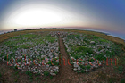
Панорамна снимка на огъня при Камен бряг - 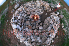
Огъня на Камен бряг сниман отгоре - 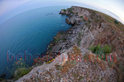
Брега на Камен бряг - 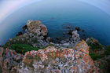
Още една снимка точно над брега на Камен бряг - 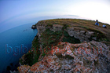
Палатки - 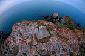
Ключова точка - 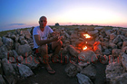
Огънят - 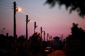
Пътя от брега към селото - 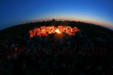
Огънят през нощта - 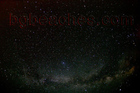
Небето над Камен бряг - 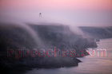
Изпарения над Камен бряг - 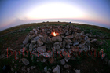
Отново огънят - 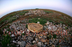
Само скали - 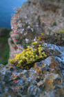
Цвете в скалите - 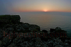
Красив изгрев над Камен бряг - 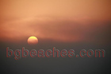
Изгрева - 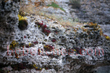
Скална красота - 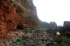
Брега отдолу - 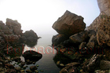
Мястото за къпане - 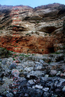
Брега отдолу и скалните пластове - 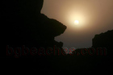
Слънцето се показва измежду скалите - 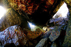
Под скалите на Камен бряг - 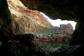
Още една снимка от изпод скалите - 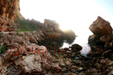
Изгрева - 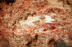
Още от скалния пласт - 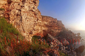
Брега в цялата си красота по изгрев - 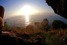
Изгрева през паяжина - 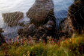
Паяжина - 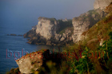
Още от брега - 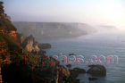
Брега в мъгла